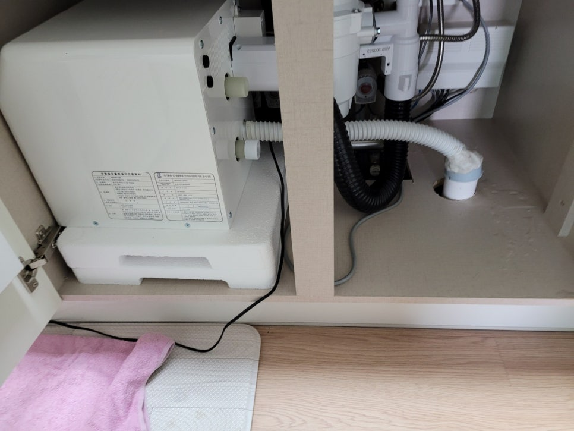
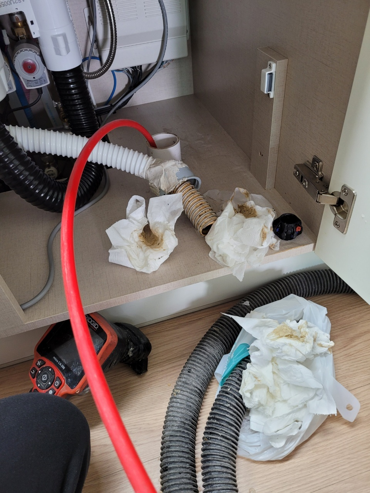
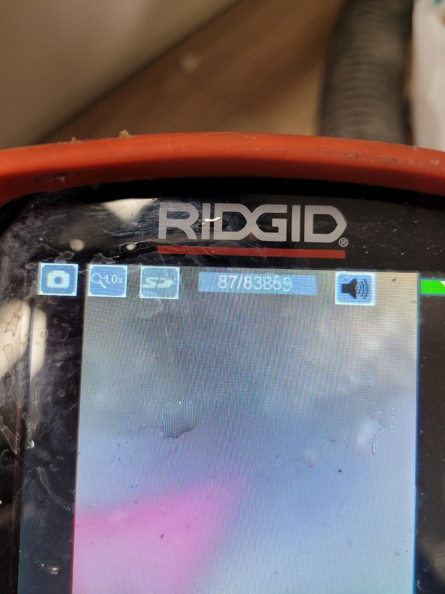

🏠 처인구하수구막힘 역북동 김량장동 싱크대역류 완벽히 뚫은 현장입니다!
용인 처인구 싱크대막힘 전문 시공 후기

📋 작업 개요
- 위치: 용인 처인구, 처인구, 용인
- 서비스 유형: 싱크대막힘, 하수구막힘, 배관막힘, 맨홀막힘, 역류해결, 뚫는업체, 배관청소, 고압세척, 악취차단
- 작업 일시: 2022. 11. 6. 10:50
- 업체명: 하수구수사대 (010-5615-2118)
🔍 문제 상황
안녕하세요. 하수구수사대입니다.
싱크대로 물을 흘려보냈을 때 원활히 배수되지 않고 물이 빠르게 배수되지 않는 상황을 겪어보신 분들 많을 겁니다.
그럴 때마다 배수구 통 안에 음식물이 차있는 것을 예상하고 비워줘도 상황이 달라지지 않는 경험을 해보신 분들 계실 텐데요. 이러한 일이 나타났을 때 배관을 청소해 줘야 한다는 상황임을 예측할 수 있습니다.
물론 모든 상황은 전문가를 통해서 배수관 내부 상황을 꼼꼼히 살펴보고 적절한 장비를 가지고 해결해야 해서 신속히 전문 업체에 문의하시는 것이 가장 바람직합니다. 이번에 저희 하수구수사대에 의뢰를 주신 처인구하수구막힘 역북동 김량장동 싱크대역류 현장도 마찬가지였는데, 신속하고 완벽하게 해결해 드리고 왔습니다

🔎 원인 분석
💡 전문가 진단: 싱크대로 물을 흘려보냈을 때 원활히 배수되지 않고 물이 빠르게 배수되지 않는 상황을 겪어보신 분들 많을 겁니다.
스스로 해결하는 방법을 이것저것 시도해 보셨는데요.
좀처럼 문제가 해결될 기미가 보이지 않고 오히려 상황이 안 좋아지는 것 같아 급하게 연락을 주셨다고 합니다. 하수구가 막히게 되는 원인은 정말 많지만 대부분 싱크대가 막히는 원인 같은 경우 주방에서 일을 할 때 기름때라던가 음식물 찌꺼기가 배관에 유입되는 케이스가 제일 많습니다. 우리 눈으로는 확인할 수 없는 배관 내부 모습을 파악하기 위하여 반드시 내시경을 이용합니다.
어떤 현장에서든 제일 먼저 작업되는 절차이고 배수관 상태를 파악해서 작업 내용을 구상합니다. 현장에 도착하여 고객님께서 거주하는 곳 내부를 점검하였는데 집안에서 해결 가능한 문제가 아니라는 것을 확인할 수 있었습니다.
그래서 다시 외부로 나와 본격적인 처인구하수구막힘 역북동 김량장동 싱크대역류
원인을 찾아보기로 결정하였습니다.

🔧 작업 과정
이번 현장과 같이 메인관에서 이상이 생기는 곳은 단순히 한 세대에서만 피해가 나타나지 않습니다. 다세대주택은 여러 세대가 동시에 배관을 사용하게 되어 메인 배관이 막히면 여러 세대에서 불편함을 느끼게 됩니다. 문제를 확인한 다음에 곧바로 내시경 카메라 작업을 준비하였습니다. 맨홀 커버를 들어내서 메인관이 있는 곳까지 카메라 호스를 연결하는데요.
이때 이물질이 많이 있거나 물이 위까지 차올랐을 경우 해당 이물질을 제거하는 석션기가 필요합니다. 이번 처인구하수구막힘 역북동 김량장동 싱크대역류 현장에서도 석션기를 가지고 이물질을 일부 제거하고 시작하였습니다.
경기도 용인시 처인구 중부대로1313번길 20-25 2층 202호 나21
내시경에 비쳐지는 내부 상태는 생각보다 심각하였는데요.
오랜 시간 동안 쌓이게 된 음식물 찌꺼기와 기름때가 떠다니고 물의 배수를 방해하고 있는 모습이 보였습니다. 배관에 이물질이 조금씩 쌓이게 되다 보니 물이 원활히 배수되는 것을 막을 정도로 자리를 차지합니다. 그래서 이러한 싱크대역류 현상이 발생이 됩니다. 이런 상황을 해결하기 위하여는 고압세척이 꼭 필요합니다. 내시경 카메라를 가지고 확인되는 이물질 덩어리를 제거해 주는 작업이라 보시면 쉽게 이해되실 겁니다.
강력한 압력으로 뿜어져 나오는 물의 힘을 이용해서 배관 벽면에 흡착된 이물질과 자리를 차지하고 있던 덩어리를 제거하는 겁니다. 배관 구조와 모양에 따라 올바른 노즐을 선택하는 것도 중요한 역할입니다. 다시는 막힘이 발생되지 않도록 강력히 흡착돼있던 이물질까지 제거를 도와주는 노즐을 이용하였습니다. 알맞은 노즐을 연결해서 배수관 속으로 투입하고 장비를 작동시키면 노즐이 돌아가게 되면서 이물질이 제거됩니다.
이때 많은 양의 이물질과 구정물이 뿜어져 나오는데, 그로 인하여 주변이 더러워질 위험도 있습니다.


✅ 작업 완료
하지만 그 마무리까지도 저희가 직접 도와드리니 걱정하실 필요 없습니다. 고압세척 작업을 여러 차례 하고 나면 내부에 쌓인 많은 양의 이물질들이 조금씩 제거됩니다. 이러한 모습은 내시경을 통하여 중간중간 꾸준히 체크하고 있습니다. 그렇게 모든 이물질이 제거되었다는 확인 끝에 처인구하수구막힘 역북동 김량장도 싱크대역류 작업은 마무리가 됩니다. 이렇게 배관 속에서 석회질 덩어리와 기름때, 각종 오염물질들이 많이 제거된 모습을 볼 수 있습니다.
고압세척 과정으로 인하여 더러워진 주변은 물을 가지고 말끔하게 씻겨내려주면서 마무리하였습니다. 고압세척을 진행하게 되면 배관 상태를 완전히 새것처럼 만들 수 있습니다. 그래서 하수구에서 냄새 유입도 어느 정도 차단이 가능합니다. 더 이상 하수구 막힘으로 고민하지 마시고 저희 하수구수사대에 문의주셔서 신속히 해결해 보시기 바랍니다. 고객님들께서 겪고 계시는 모든 문제를 신속히 해결해 드리도록 하겠습니다.




⚠️ 주방 싱크대 배관 막힘 예방 수칙
- ✅ 기름기가 묻은 식기나 프라이팬은 설거지 전 키친타올로 반드시 기름때를 닦아내세요.
- ✅ 주기적으로 싱크대 개수대에 뜨거운 물을 가득 받아 한 번에 내려 배관 내부 기름을 씻어내세요.
- ✅ 배수구 거름망을 미세한 필터로 사용하시고 음식물 찌꺼기가 틈으로 새어 들지 않게 관리하세요.
- ✅ 베이킹소다와 식초를 뜨거운 물과 함께 일주일에 한 번씩 부어주면 배관 살균과 막힘 예방에 좋습니다.
💡 핵심 정리
- 확실한 장비 작업(내시경 점검 및 샤프트 스케일링)으로 원인을 뿌리 뽑습니다.
- 작업 후 1년 이내에 동일한 부위 재발 시 100% 무상 A/S 서비스를 보장합니다.
- 서울 · 경기 · 인천 전 지역에 24시간 언제든 긴급 출동할 수 있도록 항시 대기 중입니다.
❓ 자주 묻는 질문 (FAQ)
🚨 용인 처인구 싱크대막힘 문제로 고민이신가요?
정확한 원인 진단과 확실한 시공으로 재발 없는 해결을 약속드립니다.
24시간 긴급 출동 | 서울 · 경기 · 인천 전지역 | 1년 내 재발 시 무상 A/S